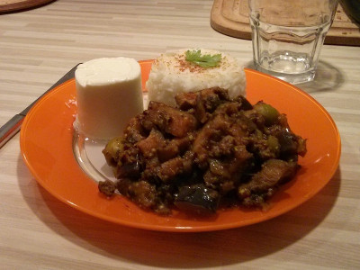
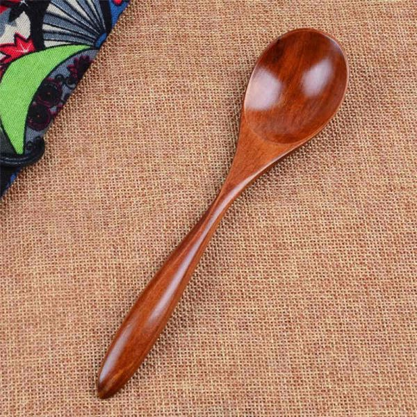

Moussaka Végétarienne
Il existe plusieures variantes de Moussaka. Beaucoup de cultures réclament l'origine de ce plat.
Cette recette est préparée par Chef Aubert Ginne .
Mots clé :végétarien ,cuisine du monde .

Un plat de moussaka servi chaud et accompagné du ris
Ingrédiants 
Oinions 0.5 Kg.
Poivrons 1 Kg.
Aubergine 1 Kg.
Tomate 1 Kg.
Coriandre moulu 1 cuillère.
Huile d'oliver
Préparation
Faire revenir les oinions à la poêle jusqu'à caramélisation , puis les mettre de côté.
Faire revenir les poivrons à la poêle, puis les mettre de côté.
Faire revenir les aubergines à la poêle, puis les mettre de côté.
Couper les tomates en traches, puis les faire revenir à la poêle, et les mettre de côté.
Mettre les oinions , les poivrons et les aubergines dans une casserole, ajouter le coriandre moulu puis mélanger.
Couvrir avec les tranches de tomates
Faire migoter le tout sur un feu doux pour 20 minutes.
Astuces du chef
Servi chaud, ce plat se marie bien avec du ris en accompagnement.
Références
Retourn en haut de la page